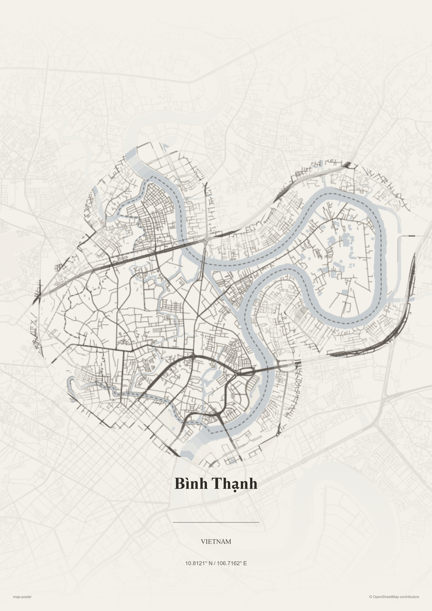
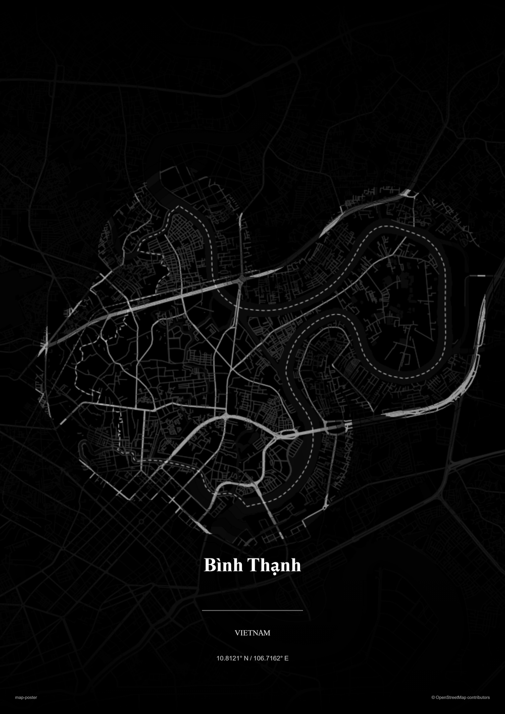
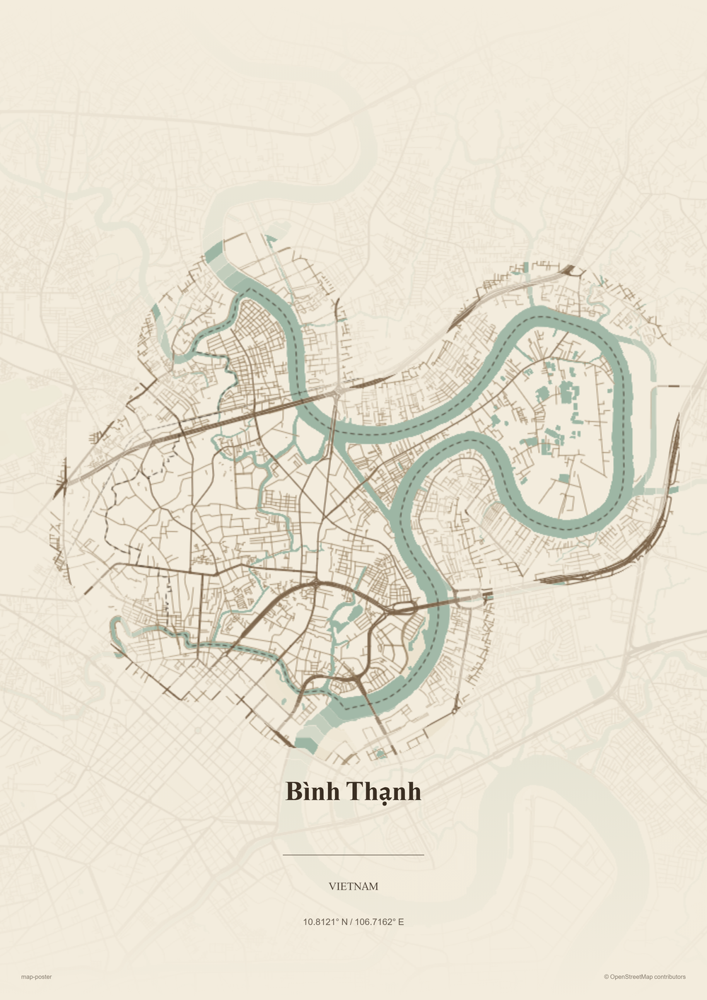

map-poster
Turn OpenStreetMap into a print-quality poster — pick an area, style it, export at 300 DPI.
Open the poster maker →


Pick an area. The map opens on Bình Thạnh — the worked example above — but you can pan and zoom to anywhere on Earth.
Style it. Choose a theme, highlight place categories, toggle ward borders, and pair fonts for the title.
Export. Frame the crop, place the title, and download a print-resolution PNG ready for the wall.